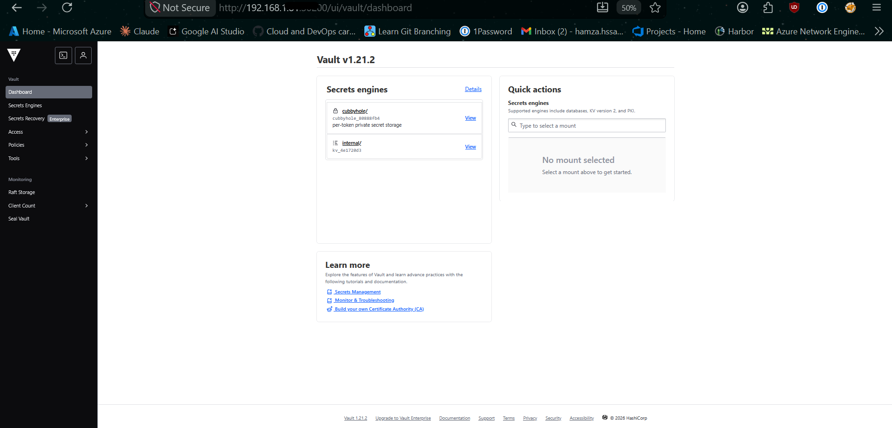
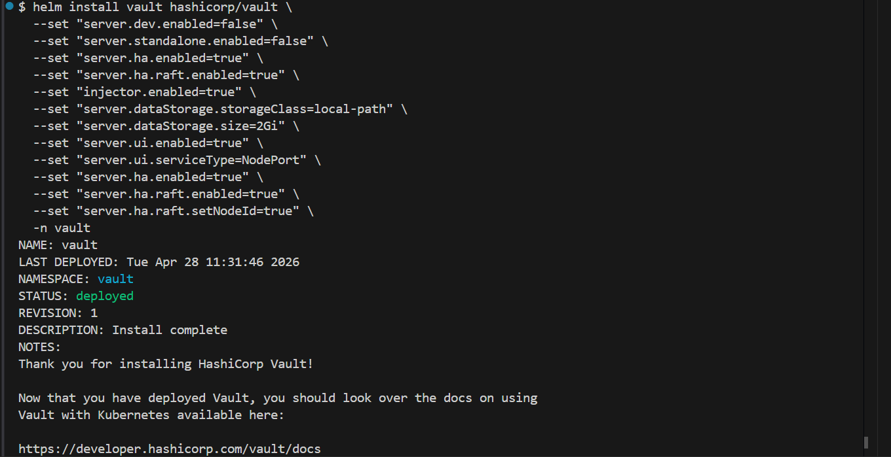
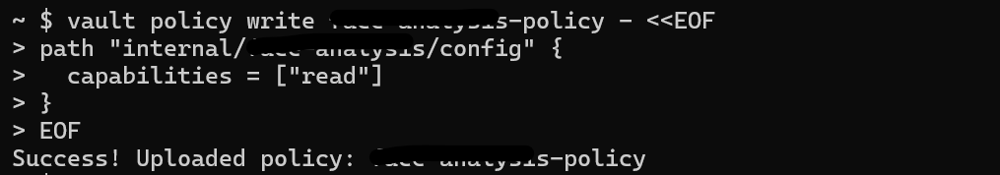
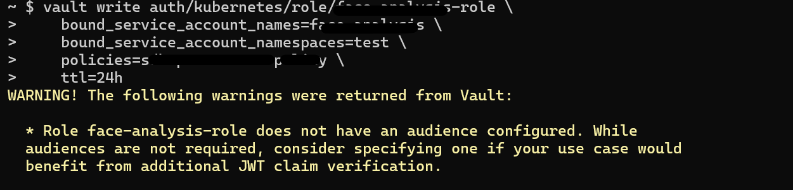
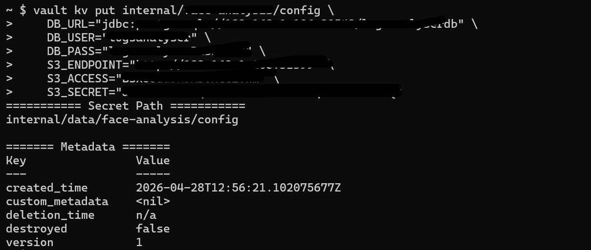

Mastering Zero-Trust Secrets: Integrating HashiCorp Vault with Kubernetes
1. The Challenge: Beyond Base64
In modern cloud-native environments, the "standard" way of handling secrets (Kubernetes Secret objects) is often insufficient. Kubernetes Secrets are merely Base64 encoded, not encrypted at rest by default. For any organization serious about security, we need Zero-Trust: no hardcoded keys in Git, no sensitive data in Helm charts, and centralized audit trails.
This guide documents the implementation of a High-Availability (HA) Vault cluster and its seamless integration with Spring Boot microservices.
2. The Architecture
Our setup utilizes the Vault Agent Sidecar Injection pattern. Instead of the application "asking" Vault for secrets via API code, Vault "pushes" secrets into the pod as local files.
- Vault Server: HA Cluster using Raft (integrated storage).
- Vault Injector: A mutating admission webhook that monitors pod annotations.
- Auth Method: Kubernetes Auth, where Vault verifies the pod's identity via its ServiceAccount JWT.
1. Pod starts with Vault annotations.
2. Injector adds an init-container and a sidecar.
3. Init-container logs into Vault, fetches secrets, and writes them to a shared memory volume (
/vault/secrets).4. Main App container starts and reads the secrets as local files.
Raft Storage] -.->|Webhook| B(Vault Injector) B -.->|Monitors Annotations & Injects| C[Pod: Microservice] subgraph K8s Pod C1[Init Container: vault-agent-init] -->|Writes to| C2[(Shared Volume
/vault/secrets)] C2 -->|Reads from| C3[Main App Container
Spring Boot] end C --- C1 C1 == Kubernetes Auth (SA JWT) ==> A A == Returns Secrets ==> C1

Phase 1: Clean Deployment (Helm)
To install Vault with High Availability (HA) and the Web UI enabled, we use the official Helm chart.
# 1. Add repo
helm repo add hashicorp https://helm.releases.hashicorp.com
helm repo update
# 2. Install HA Cluster with Raft Storage
helm install vault hashicorp/vault \
--namespace vault \
--create-namespace \
--set "server.ui.enabled=true" \
--set "server.ui.serviceType=NodePort" \
--set "server.ha.enabled=true" \
--set "server.ha.raft.enabled=true" \
--set "server.ha.raft.setNodeId=true"
Phase 2: The "Fortress" Initialization
Vault starts in a "Sealed" state. It cannot read its own data until it is unsealed.
Initializing the Leader
# 1. Initialize (Generating the Master Keys)
# In production, use -key-shares=5 -key-threshold=3
kubectl exec -n vault vault-0 -- vault operator init -key-shares=1 -key-threshold=1 -format=json > cluster-keys.json
# 2. Extract keys for convenience
export UNSEAL_KEY=$(jq -r ".unseal_keys_b64[0]" cluster-keys.json)
export ROOT_TOKEN=$(jq -r ".root_token" cluster-keys.json)
# 3. Unseal the leader (vault-0)
kubectl exec -n vault vault-0 -- vault operator unseal $UNSEAL_KEYJoining HA Nodes (vault-1 and vault-2)
For a true HA cluster, the other pods must join the Raft cluster:
# Repeat for vault-1 and vault-2
kubectl exec -n vault vault-1 -- vault operator raft join http://vault-0.vault-internal:8200
kubectl exec -n vault vault-1 -- vault operator unseal $UNSEAL_KEY
kubectl exec -n vault vault-2 -- vault operator raft join http://vault-0.vault-internal:8200
kubectl exec -n vault vault-2 -- vault operator unseal $UNSEAL_KEYPhase 3: Core Configuration
Log into the Vault CLI to enable the basic engines required for Kubernetes Integration.
# Enter the Vault container
kubectl exec -it -n vault vault-0 -- /bin/sh
# Login as Admin
vault login $ROOT_TOKEN
# 1. Enable KV-V2 Secrets Engine (The 'internal' path)
vault secrets enable -path=internal kv-v2
# 2. Enable Kubernetes Authentication
vault auth enable kubernetes
# 3. Configure Auth to talk to the K8s API
vault write auth/kubernetes/config \
kubernetes_host="https://kubernetes.default.svc:443"Phase 4: Application Onboarding
Follow these steps for every new microservice you deploy to fetch secrets dynamically.
1. Define the Policy (app-policy.hcl)
Create a policy that limits the app to its own folder. Note: KV-V2 requires the data/ prefix in the path.
vault policy write my-app-policy - <<EOF
path "internal/data/my-app/config" {
capabilities = ["read"]
}
EOF
2. Create the Role
Binds the Kubernetes ServiceAccount to the Policy.
vault write auth/kubernetes/role/my-app-role \
bound_service_account_names=my-app-sa \
bound_service_account_namespaces=production \
policies=my-app-policy \
ttl=24h
3. Seed the Secrets
Push the actual sensitive data into Vault.
vault kv put internal/my-app/config \
DB_PASSWORD="super-secret-pass" \
API_KEY="AIzaSyB..." \
S3_SECRET="a6DuZ0E..."
Phase 5: Troubleshooting & Best Practices
The "Permission Denied" (403) Checklist
1. Policy Path: Does it have
/data/? (e.g., internal/data/...)2. Role Binding: Does the
bound_service_account_namespaces include the namespace where your app is running?3. Role Name: Does the
vault.hashicorp.com/role annotation in the Deployment match the role name in Vault?
Best Practice: The Backup (Snapshot)
Vault data is encrypted, but you must still back up the encrypted database.
# Take a snapshot of the Raft database
kubectl exec -n vault vault-0 -- vault operator raft snapshot save /share/vault-backup.snapBest Practice: Maintenance
Action: Always check
kubectl get pods -n vault. If any show 0/1 Ready, you must run the unseal command again for that pod (unless auto-unseal is configured).
• Auth: Kubernetes ServiceAccount JWT.
• Transport: Vault Agent Sidecar (Injector).
• Storage: Local Raft (HA).
• Security: Path-based ACL Policies.
Conclusion
By moving secrets into Vault, we didn't just improve security; we drastically improved Developer Experience (DX). Developers no longer manage and pass around secret.yaml files. They simply define what they need directly in Vault, and the infrastructure handles the rest securely and transparently.